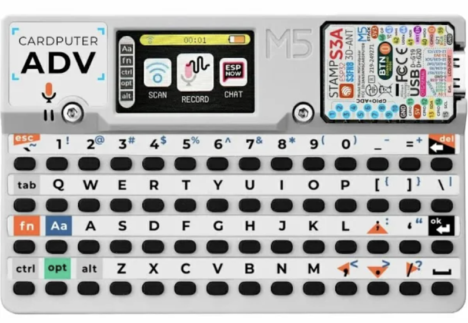

M5Stack Cardputer
The M5Stack Cardputer is a pocket computer built around an Espressif ESP32-S3, with its own keyboard,
color display, speaker, microSD slot and battery. Its CPU is an Xtensa LX7, so Juno compiles for it
with the same Xtensa backend as the Nano ESP32. The M5StackCardputer device facade is the entry
point for its peripherals.

Core specification
| Characteristic | M5Stack Cardputer |
|---|---|
| Microcontroller | Espressif ESP32-S3 |
| CPU architecture | Dual-core 32-bit Xtensa LX7 |
| CPU clock | 240 MHz |
| Program flash | 8 MB |
| SRAM | 512 kB |
| Logic and operating voltage | 3.3 V |
| USB connector | USB-C (native USB) |
| Display | 240 × 135 pixel color |
| Built-in hardware | Keyboard, speaker, microSD slot, battery |
| Arduino CLI FQBN | m5stack:esp32:m5stack_cardputer |
| Juno board id | m5stack-cardputer |
What Juno supports
| Feature | Status | Notes | Example |
|---|---|---|---|
Delay, Serial |
✓ | Serial over the native USB port, at 115200 baud. |
|
| Classes, interfaces and inheritance | ✓ | Inheritance, Interfaces |
|
BigInteger, BigDecimal, MathContext |
✓ | ||
SdCard |
✓ | Built-in microSD slot through M5StackCardputer.getSd(). |
M5CardputerSd |
| Wi-Fi station and access point | ✓ | M5StackCardputer.getWifi(); credentials can come from the microSD card. |
M5CardputerWifi, M5CardputerWifiStatusSD |
HttpClient (HTTP and HTTPS) |
✓ | HTTPS with a trusted certificate set by the program. | MailboxCardputer |
HttpServer (HTTP and HTTPS) |
✓ | HttpServer.beginTls serves HTTPS on the station address. |
CardputerHttpsServerSD |
| Display | ✓ | 240 × 135 RGB565 through M5StackCardputer.getDisplay(). |
M5CardputerDisplay |
| Keyboard | ✓ | M5StackCardputer.getKeyboard(), polled without allocation. |
M5CardputerKeyboard |
| Speaker | ✓ | M5StackCardputer.getAudio(): tone, setVolume, stop. |
ZeldaOcarinaCardputer |
| Battery | ✓ | M5StackCardputer.getBattery(): estimated level and voltage. |
M5CardputerBatteryLevel |
| USB HID mouse | ✓ | M5StackCardputer.getMouse() through TinyUSB; shares the USB port with Serial. |
M5RatonLoco |
Features
SD card
M5StackCardputer.getSd() returns the Cardputer's built-in microSD socket. Calling begin() uses its standard SPI wiring: chip
select GPIO12, MOSI GPIO14, MISO GPIO39, and clock GPIO40.
SdCard sd = M5StackCardputer.getSd();
if (sd.begin()) {
Serial.println("SD card ready");
}
Wi-Fi
M5StackCardputer.getWifi() returns the Cardputer's built-in ESP32-S3 radio. Keep the network's credentials on the
microSD card rather than in the source: put them in application.properties at the card's root,
wifi.ssid=your-network
wifi.password=your-password
then read the file with java.util.Properties and join the network:
SdCard sd = M5StackCardputer.getSd();
Wifi wifi = M5StackCardputer.getWifi();
if (sd.begin()) {
try (InputStream file = sd.open("application.properties")) {
if (file != null) {
Properties properties = new Properties();
properties.load(file);
wifi.begin(properties.getProperty("wifi.ssid"), properties.getProperty("wifi.password"));
}
}
}
while (wifi.status() != Wifi.STATUS_CONNECTED) {
Delay.millis(1000);
}
M5CardputerWifiStatusSD is the complete program: it
joins the network and shows the connection status on the display.
./mvnw -f juno-examples/pom.xml compile juno:upload \
-Djuno.main=io.github.jabrena.juno.api.hardware.net.wifi.M5CardputerWifiStatusSD
Display
M5StackCardputer.getDisplay() returns the Cardputer's 240 by 135 pixel color display. Colors use RGB565 values, with common colors
available as constants and Display.color(red, green, blue) for custom colors. Call begin() once before drawing.
Display display = M5StackCardputer.getDisplay();
display.begin();
display.fillScreen(Display.BLACK);
display.fillRect(8, 8, display.width() - 16, 4, Display.BLUE);
display.setCursor(12, 24);
display.setTextColor(Display.GREEN, Display.BLACK);
display.setTextSize(2);
display.println("Hello, Juno!");
The display interface also provides height(), drawPixel(...), print(...), and println(...). Applications can
receive a mock Display in desktop unit tests.
Keyboard
M5StackCardputer.getKeyboard() returns the Cardputer's built-in keyboard. Initialize it once, call update() in the main loop,
and inspect the state after isChanged() reports a transition.
Keyboard keyboard = M5StackCardputer.getKeyboard();
keyboard.begin();
while (true) {
keyboard.update();
if (keyboard.isChanged() && keyboard.isPressed()) {
for (int index = 0; index < keyboard.keyCount(); index++) {
Serial.println(keyboard.keyAt(index));
}
}
Delay.millis(20);
}
keyAt(...) returns printable character codes or Keyboard.BACKSPACE, Keyboard.TAB, and Keyboard.ENTER.
isKeyPressed(...) checks one character or control key. Shift, Control, Alt, Fn, and Option have dedicated state
methods, so no array or collection needs to be allocated while polling.
Speaker
M5StackCardputer.getAudio() returns the built-in speaker. tone(frequencyHz, durationMillis) plays a note,
setVolume(...) sets the loudness and stop() silences it.
Audio audio = M5StackCardputer.getAudio();
audio.setVolume(128);
audio.tone(440, 500);
ZeldaOcarinaCardputer plays a melody on it.
Battery
M5StackCardputer.getBattery() reports the built-in battery's estimated charge level in percent and its voltage in
millivolts.
Battery battery = M5StackCardputer.getBattery();
Serial.print(battery.levelPercent());
Serial.println("%");
USB HID mouse
The Cardputer's ESP32-S3 can act as a USB HID mouse through its core's TinyUSB stack. Call begin() once,
then move(x, y) moves the computer's pointer by that many pixels:
Mouse mouse = M5StackCardputer.getMouse();
mouse.begin();
while (true) {
mouse.move(50, 0); // right
Delay.millis(1000);
mouse.move(0, 50); // down
Delay.millis(1000);
mouse.move(-50, 0); // left
Delay.millis(1000);
mouse.move(0, -50); // up
Delay.millis(1000);
}
Once uploaded, the program keeps moving the pointer of the computer it is plugged into; disconnect the board or upload another program to stop it.
M5RatonLoco moves the host pointer around a square and reports each side over the USB serial
console. The native TinyUSB device may receive a new serial-port path after flashing: use arduino-cli board list and pass
that new /dev/cu.usbmodem... path as -Djuno.port if the monitor does not attach.
Build and run
Run juno:install-deps once to install the M5Stack ESP32 board package and the official M5Cardputer library along with
the other supported board cores and libraries. Then compile and upload an example, for instance the battery report:
./mvnw -f juno-examples/pom.xml compile juno:upload \
-Djuno.main=io.github.jabrena.juno.api.hardware.battery.M5CardputerBatteryLevel \
-Djuno.board=m5stack-cardputer
Open the serial monitor in another terminal:
./mvnw -f juno-examples/pom.xml juno:monitor \
-Djuno.board=m5stack-cardputer
The monitor uses 115200 baud by default, matching Serial.begin(BaudRate.BAUD_115200).